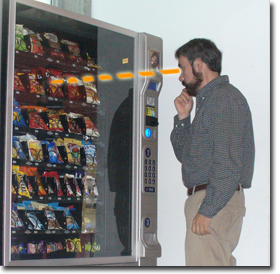

How to Buy from a Vending Machine
By John Doe
Step 1: Select Visually the Item of Choice
Scan through the different snacks and check whether there is something that might satisfy your cravings. The types of products that you can buy vary from machine to machine; however, most of them include some kind of chips, chocolates, cookies, and gums. Some machines offer healthy snacks such as baked chips, granola bars, and peanuts.
Even though most vending machines contain fresh products, it might be convenient to try to visually double check the expiration date of the snack you want to buy.
Also, it is important to inspect visually wheather the item of choice is all way to the front in the dispensing coil, otherwise the item will not be pushed out when the coil spins.


Step 2: Get the Item of Choice Identification Code